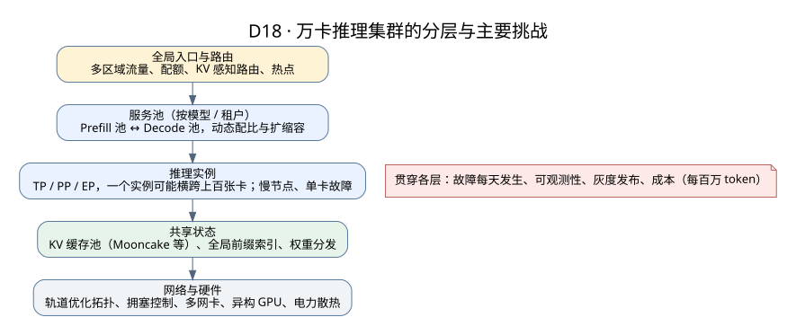

万卡集群的推理 Infra：挑战与常见做法
Serving 与性能 · 推理优化方法 · 设计图：主节点切换 · 公开数据
几台机器上好用的方案，放到上万张卡的集群里会遇到全新的问题：故障从“偶尔”变成“每天都有”，网络从“够用”变成“最贵的瓶颈”，调度从“选一台机器”变成“全局优化”。这一页按问题整理万卡规模推理集群的主要挑战和常见做法。
说明：公开的万卡数据多来自训练集群，推理集群的特点不同（请求独立、实例可以单独重启），引用时要注意区别。
1. 全景：万卡推理集群长什么样

从上到下大致分五层：全局流量入口和路由、按模型划分的服务池（可能再分 Prefill 池和 Decode 池）、单个推理实例（可能横跨几十到上百张卡）、共享的 KV 缓存和权重存储、底层的网络和硬件。每一层在规模变大时都有自己的问题。
2. 故障：从偶尔变成每天都有
Meta 在 Llama 3 论文（arXiv:2407.21783）中报告：16,384 张 H100 的训练集群，54 天里发生 419 次意外中断，平均每天约 7.8 次，其中一半以上与 GPU 或显存有关。卡越多，“某处坏了”就越是常态。
| 挑战 | 推理集群里的表现 | 常见做法 |
|---|---|---|
| 单卡故障影响面 | 普通实例只影响自己；但大 MoE 模型用 EP 跨几十上百张卡组成一个实例，一张卡坏了整个实例都停 | 实例规模和故障影响面一起设计；健康检查快速摘除；支持部分专家失效时降级（容错 EP） |
| 静默错误 | 不报错但算错（显存位翻转、硬件缺陷），输出质量下降 | 定期用已知输入做校验；监控输出分布异常 |
| 慢节点 | 一张卡或一条链路变慢，拖慢整个 TP/EP 组 | 按组监控每步耗时，自动识别并替换慢节点 |
| 缓存层故障 | KV 缓存节点退出，大量请求同时回退重算，GPU 被打满 | 副本、限制重算速率、缓存全冷时的容量预案；见设计图 D11 |
3. 网络：最贵的瓶颈
| 挑战 | 原因 | 常见做法 |
|---|---|---|
| 拓扑与收敛比 | 上万张卡不可能两两全带宽互联，跨交换机层级的带宽会打折 | 轨道优化（rail-optimized）拓扑：同号 GPU 的网卡连同一组交换机；把通信多的任务放在同一个网络域内 |
| 拥塞与尾延迟 | MoE 的 all-to-all、PD 的 KV 传输、缓存读取同时进行，形成多对一的拥塞（incast） | 拥塞控制（RoCE 下 ECN/PFC 调优）、流量分级、限制同时在途的传输量 |
| 多网卡利用率 | 网卡越多越难线性扩展：Mooncake 公开数据中 8×400G 只用到线速的约一半 | 按拓扑选路、切分 slice、多路径；见Transfer Engine |
| 流量混部 | KV 缓存、PD 交接、专家通信、权重加载抢同一张网 | 分网络平面或分优先级；容量规划时画清流量矩阵 |
4. 调度与路由：从选一台机器到全局优化
- KV 感知的全局路由：请求发到已有前缀的实例能省大量计算，但需要全局前缀索引（例如 Mooncake Conductor 消费缓存事件维护索引）。索引规模大、更新频繁，而且一定会过时，路由只能当作“提示”，实际加载时必须再验证。
- 热点：热门系统提示或文档的请求都挤到少数实例，要复制热点前缀或在命中和负载之间折中。
- PD 配比：Prefill 池和 Decode 池的比例随负载变化，要能动态调整。公开案例：Kimi K2 在 128 张 H200 上用 PD 分离加大规模专家并行部署（见公开数据）。
- 多模型、多租户：几十个模型共享集群，要做配额、隔离和优先级，避免大租户挤占小租户。
5. 弹性与发布
| 挑战 | 具体问题 | 常见做法 |
|---|---|---|
| 冷启动慢 | 万亿参数模型 FP8 权重约 1 TB，从远端存储加载到大量 GPU 可能要几分钟甚至更久 | 权重预热、本地缓存、GPU 之间用 RDMA 点对点分发（Mooncake README 引用的 SGLang 案例中，Kimi-K2 权重更新从 53 秒降到 7.2 秒） |
| 扩缩容跟不上流量 | 流量有明显的日内波动和突发 | 预测扩容、保留一定余量、低优先级任务填谷 |
| 版本发布 | 新旧模型或新旧 KV 格式同时存在，缓存不能混用 | 按命名空间隔离、灰度发布、可回滚；见设计图 D13 |
| 异构硬件 | 不同代际、不同厂商的卡混在一起，性能和支持的特性不同 | 按硬件分池；Prefill 和 Decode 可以用不同的卡 |
6. 可观测性与成本
- 指标规模：上万个实例、每个实例几十个指标，标签设计不当会让监控系统先崩；不要把请求 id、原文放进标签。
- 端到端追踪：一个请求可能经过路由、Prefill 池、KV 传输、Decode 池、缓存服务，需要跨组件的 trace 才能定位慢在哪里。
- 成本：GPU 费用占大头，衡量指标应该是“满足 SLO 的每百万 token 成本”，而不是单纯的吞吐；电力和散热在这个规模也会成为约束。
7. 面试怎么答
问：把一个 KV 缓存方案从 100 张卡扩到 1 万张卡，会遇到什么问题？
- 容量和元数据：对象数增长两个数量级，单个 Master 的内存和 QPS 是否够用？需要分片或分层的元数据吗？
- 网络：缓存读取流量和 PD、EP 流量怎样共存？跨交换机层级的带宽够不够？
- 故障：每天都会有节点退出，副本放置要跨故障域，修复流量不能压垮在线服务，缓存失效时 GPU 能否承受重算。
- 路由：全局前缀索引怎样维护、怎样处理过时；热点怎样复制。
- 演进：模型和格式升级、多租户隔离、灰度和回滚怎样做。
每一点都要能给出量级估算（对象数、带宽、故障频率）和验证方法，而不只是列名词。更多题目见专家深挖问答。